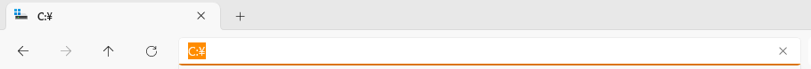
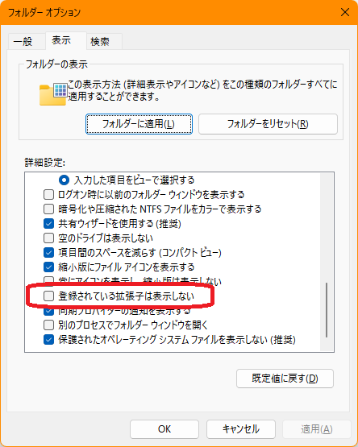

パソコンの仕組み
- ファイルとフォルダの階層構造と「パス」を読める
- OS とアプリの関係、クラウドとは何かが分かる
普段エクスプローラーを使っていれば、すでにファイルとフォルダの操作はできています。この章では、その裏側で何が起きているかを整理します。次の第2章で使うターミナルを理解するための土台になります。
1-1. ファイルとフォルダは「木」の形をしている
パソコンの中のファイルは、フォルダの中にフォルダがある、という入れ子の構造で整理されています。この構造を図にすると、木を逆さにした形になります。
OneDrive と「学習用フォルダ」
Windows 11 では、OneDrive（ワンドライブ）というサービスが、「デスクトップ」「ドキュメント」「ピクチャ」の中身を自動でインターネット上にバックアップしていることがあります。この場合、これらのフォルダの実体は C:\Users\taro\OneDrive\… の中に移っています。
C:\work で行う.git という隠しフォルダに、小さなファイルをたくさん作って保存します。これが OneDrive の同期と重なると、同期の競合が起きたり、記録が壊れる原因になったりすることがあります。そのため、この教材の演習は、すべて OneDrive の外にある学習用フォルダ C:\work で行います。デスクトップやドキュメントの中では行わないでください。
OneDrive という文字があれば、OneDrive の中です。エクスプローラーで、フォルダやファイルの横に雲のマークが付いていても、同期の対象です。C:\work のような、C:\Users の外のフォルダには付きません。
C:\work を作れないときは
会社や学校のパソコンなどで C:\work を作れない場合は、C:\Users\自分の名前\work でも構いません（デスクトップやドキュメントの外に作ります）。その場合は、以降の C:\work を、自分のフォルダに読み替えてください。
1-2. パス：ファイルの住所
ファイルやフォルダの場所を文字で表したものをパスといいます。住所と同じで、一番大きな単位から順にたどります。
C:\Users\taro\Documents\memo.txt| 部分 | 意味 |
|---|---|
C: | Cドライブ（一番上） |
Users | Cドライブの中の Users フォルダ |
taro | その中の taro さんのフォルダ |
Documents | その中の Documents フォルダ |
memo.txt | 最後がファイル。.txt が拡張子 |
「¥」と「\」は同じ文字（混乱しやすいところ）
パスの区切りに使う「\」は、バックスラッシュという記号です。日本語のパソコンでは、フォントによって「¥」（円記号）の形で表示されます。見た目が違うだけで、中身は同じ文字です。キーボードで「¥」と書かれたキーを押すと入力できます。
| 見た目 | 名前 | パスやコマンドで使える？ |
|---|---|---|
| \ | バックスラッシュ | 使える |
| ¥ | 円記号（半角）。\ と同じ文字 | 使える |
| ￥ | 円記号（全角）。別の文字 | 使えない |
C:¥work のように、「¥」で表示されます（Windows 11 の画面の文字は、日本語向けのフォントで描かれるためです）。これは \ と同じ文字です。一方、PowerShell の画面では、C:\work と、「\」で表示されます。場所によって見た目が違いますが、同じ文字です。
「/」（スラッシュ）でも書ける
この教材では、Windows のふつうの書き方に合わせて、パスを C:\work\practice のように「\」で書きます。でも実は、第2章から使う PowerShell や、第3章から使う Git では、「/」（スラッシュ）で区切っても動きます。
cd C:\work\practice ← この教材の書き方
cd C:/work/practice ← これでも同じ場所に移動できる
cd C:/work\practice ← 混ぜても動く（でも、読みにくいのでおすすめしない）Mac や Linux ではパスを「/」で区切るため、ネットの資料や Git の説明には「/」のパスがよく出てきます。また、Git が表示するパスも、Windows で使っていても docs/index.html のように「/」です。「/」で書かれていても、そのまま使えることが多いと知っておくと、あわてずにすみます。
| 見た目 | 名前 | パスやコマンドで使える？ |
|---|---|---|
| / | スラッシュ（半角） | PowerShell や Git では使える（下の注意も読む） |
| ／ | スラッシュ（全角）。別の文字 | 使えない |
- 迷ったら、この教材どおり「\」で書く。手順の説明や画面の写真は「\」で統一しています。見比べやすいように、慣れるまでは「\」で打つのがおすすめです。
- 「/」で打っても、表示は「\」になる。たとえば
cd C:/workのあとのプロンプトやpwdの結果は、C:\workと「\」で表示されます。間違えたわけではありません。 - Tab キーで補完すると、「\」に変わる。途中まで「/」で打っても、補完されたところは「\」になります。どちらでも動くので、気にしなくて大丈夫です。
- 古いコマンドでは、「/」が別の意味になる。コマンドプロンプト（
cmd）の時代からあるコマンドでは、dir /wのように、「/」がオプション（命令の付け足し）の目印として使われます。そうしたコマンドにパスを渡すときは、「\」で書くほうが確実です。この教材で使うコマンドでは、困ることはありません。 - 全角の「／」は使えない。「￥」と同じで、日本語入力がオンのまま打つと全角になります。半角英数（「A」）で打ちましょう。
- Mac / Linux では、「\」は使えない。逆向きは通じません。Windows 以外のパソコンでは、パスは「/」で書きます。
☕ コーヒーブレイク：なぜ「¥」と「\」は同じ文字なの？（読み飛ばしてOK）
これは、パソコンが文字を番号で覚えていることから始まる話です。
- 文字には番号がある。パソコンは「A は 65番」のように、文字を番号で覚えています。この番号表を文字コードといいます。
- アメリカの表（ASCII）では、92番は「\」。世界で最初に広まった英語圏の表です。
- 日本の表（JIS）では、92番を「¥」にした。当時は「国ごとに、いくつかの記号を入れ替えてよい」という決まりがありました。日本語の文書には円記号が欲しいので、92番を「¥」にした、とされています。韓国は同じ92番を「₩」（ウォン）にしました。
- 1983年ごろ、MS-DOS がフォルダの区切りに92番を採用した。日本で売られた DOS では、92番が「¥」で表示されたので、日本では
C:¥DOS¥…と見えました。同じ92番が、アメリカではC:\DOS\…と見えていたのです。 - 今の Windows でも、番号は同じ92番。変わったのは、画面に描くときのフォントです。古くからある日本語向けのフォントは92番を「¥」の形で描き、新しいフォントや英語圏のフォントは「\」の形で描きます。だから、画面によって見た目が違います。
- 全角の「￥」は、92番とは別の番号の文字。だから、パスでは使えないのです。
おまけ（豆知識）
- 昔の日本語の文字コード（Shift_JIS）では、「ソ」「表」「能」などの漢字・カタカナの2番目の部分がたまたま92番でした。そのため、これらの文字を含むファイル名やプログラムが、古いソフトで壊れる不具合がありました。「5C問題」と呼ばれています。
- なお、この不具合は今ではほとんど起きません。今の Windows やブラウザは、Unicode という新しい表で文字を扱っているためです。

拡張子とは
ファイル名の最後の .txt や .docx が拡張子です。「このファイルは何の種類か」をパソコンに伝える目印です。初期設定では非表示のことがあります。エクスプローラーの「表示」メニューから「ファイル名拡張子」にチェックを入れて、表示しておきましょう。

エクスプローラーで「ドキュメント」フォルダを開き、アドレスバーの空いている場所をクリックして、パスを文字で読んでみましょう。そのパスに OneDrive という文字は入っていますか？
ヒント
パスは、いちばん左から順に読みます。C:\Users\… のあとに、何が続いているかを見ます。
こたえと解説
人によって違います。C:\Users\自分の名前\Documents のように OneDrive がなければ、OneDrive の外です。C:\Users\自分の名前\OneDrive\ドキュメント のように OneDrive が入っていれば、OneDrive でバックアップされています。どちらでも問題はありませんが、この教材の演習は、どちらの場合でも C:\work で行います。
1-3. OS とアプリ
OS（オペレーティングシステム）は、パソコン全体の管理役です。この教材では Windows 11 のことです。画面の表示、ファイルの管理、キーボードやマウスの受付などを担当します。
アプリ（Word、ブラウザ、メモ帳など）は、OS にお願いしてファイルを読み書きしたり、画面に表示したりして動きます。エクスプローラーも、ファイルを見せてくれるアプリの一つです。
1-4. プログラムとソースコード
アプリの正体はプログラムです。プログラムは、人間が書いた「ソースコード」から作られます。そして、ソースコードは、ただのテキストファイルです。メモ帳で開ける文字の並びで、特別なものではありません。
Git が記録するのは、主にこのソースコードのようなテキストファイルの変更履歴です。「文字ファイルの変更を記録する道具」と覚えておいてください。
1-5. クラウドとは
「クラウド」という言葉は雲のようで、つかみにくいかもしれません。実際は、インターネットの向こうにある、誰かの大きなパソコン（サーバー）のことです。
GitHub も、その一つです。自分のパソコンにあるファイルの記録を、GitHub のサーバーに置くことで、別のパソコンやスマートフォンからも、同じ記録を見られるようになります。ほかの人と一緒に作るときは、離れた場所にいる人とも、同じ記録を共有できます。
確認クイズ
Q1. C:\Users\hanako\Desktop\plan.md で、ファイルはどれですか？
最後の plan.md。それより前の Users、hanako、Desktop はフォルダ。
Q2. GitHub にあるものはどこに保存されていますか？
インターネットの向こうにある、GitHub のサーバー。
話し合おう・考えてみよう
- 普段のファイルの整理方法を、振り返ってみましょう（仲間がいれば、教え合ってみましょう）。デスクトップに置く派ですか？ フォルダに分ける派ですか？
- 「保存し忘れて内容が消えた」経験はありますか？